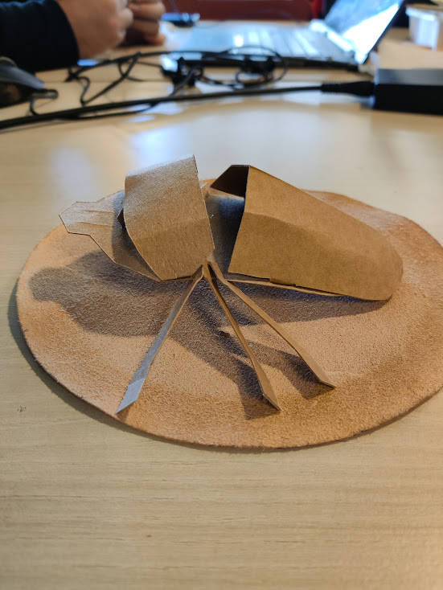

Overview
In the circumstances of the A4 How To Make (Almost) Anything class,
I had the oportunity to make an object of my choosing with a cutting machine
I decided to make a Rhino Scarab from an Image found online
Process
Cutout design
Using draw.io I draw a simplified outline of my scarab adding cuts for later assembly
(even though its not adapted for CAD, I'm simply used to this app)
Send to the cardboard cutter
Using Cicad, I converted the STL file into a readable instruction set for the machine
However the machine didn't do a perfect cut, So I had to finish the job with a scalpel/cutter
Assembling
With the pieces obtained, I started assembling the scarab, enlarging the slices and sticking the pieces together with glue
assembled the scarab in the following order:
1st the front

then the back
The legs
And finally the horn
Remember that I was supposed to print 2 horns, when I only printed one
Back to Portfolio